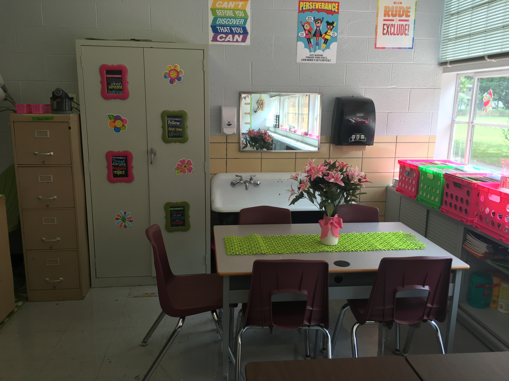

Welcome to Sierra Ruiz's Mini Project 2: Digital Images
| Hardware and Software Utilized |
| Software: |
Adobe Photoshop Express
|
Hardware: |
HP ProBook 4540s
| Camera: |
iPhone 6s
| |
Images: Set 1
For the first set of images, I used an iPhone 6s to capture the original photograph. After taking the photo, I emailed it to myself so that I could open it up from my laptop computer. Once on the computer, I then downloaded the original image from my email, opened up Photoshop, and began editing.
As I started editing, I noticed right away that the image was rather large and needed to be resized. In order to fit the requirements, I adjusted the image from 4042 x 3024 px, down to 800 x 600 px. I then cropped the image to focus in more on the table, getting rid of the filing cabinet on the left hand side, and the desks at the bottom. Next, I moved onto correcting the brightness level of the photo. This picture was taken without the use of flash, filters or adjustments, so it is rather dark in some areas. I did notice that when I modified the brightness levels, some of the areas near the window, were almost too bright. In particular, there seemed to be a strong glare in the mirror from the reflection of the sun on the wall. In order to correct this, I used the paintbrush feature, as well as the eyedropper tool to find the exact color of the wall, and painted over it. Finally, I used the shadow/highlight command to correct some of the areas that seemed washed out and brighten the areas of shadow.
| Before |
After |
|  |
 |
[Top]
Images: Set 2
For the second set of images, I used an iPhone 6s and had another person capture the original photograph of myself alongside my mother and sister. After emailing the photograph to myself, I downloaded it and then opened it in Photoshop to begin editing. Like the first set of photos, the original picture in this set was taken without the use of any flash, filters or adjustments.
To begin editing, I focused on the brightness of the photo. As you can see in the original photograph, the lighting if very poor which makes it difficult to see the facial features of each person. In order to correct this, I used the “magic W” tool to focus in on all three people, and then adjusted the levels and curves of that specific area. These adjustments really helped lighten up this area and made the facial features a lot more visible. Next, the image was resized to fit the requirements of 800x600 px, and then cropped to focus the attention on the people, rather than the background. Finally, I used the shadow/highlight command to brighten some areas of shadow.
| Before |
After |
|
 |
[Top]
Email Sierra Ruiz